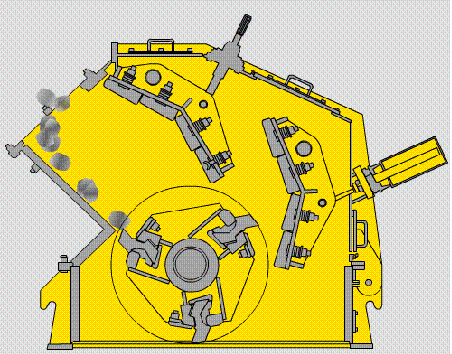

Imapct Crusher
Impact crusher, which history can be traced back to nineteenth Century 50 years, distance from the birth of the first jaw crusher in the world has passed a long time. With the development of productive forces, jaw crusher has been unable to fully meet the needs of crushing technology, so, On the basis of the jaw crusher , people designed the impact crusher.
In 1924, the Germans were first developed to counter type single, double rotor two types of impact crusher machine, along with the further development of crushing and screening crushing theory and technology is increasingly perfect, all kinds of high performance impact crusher also emerge in an endless stream. With the continuous development of international science and technology, large crushing and screening equipment has been developed very well.
Impact Crusher Application
SBM impact crusher is our company in the absorption of advanced technologies at home and abroad, combined with domestic sand industry specific mining conditions and the latest development impact crusher. Our impact crusher include two series: pf series and pfw series.
They are adopting the technology of manufacturing the new, unique structure design, processing products were cube, no tension and fracture, grain shape is quite good, all can break the feed particle size of not more than 500mm, 350MPa compressive strength is not more than in the coarse, fine, materials (granite, limestone, concrete, etc.). It's widely used in various kinds of ore crushing, railway, highway, energy, cement, chemical, construction and other industries. The nesting grain size can be adjusted, crushing specifications diversification.
Impact Crusher Structure And Working Principle
Impact crusher is mainly composed of rod, front counter frame, frame, after the impact lining impact, main shaft, a locking block, a pressing plate, a rotor rack, rotor plate hammer, impact plate, etc..
With novel design equipment design, using the new concept of crushing technology, can satisfy the different specifications of the broken material, fully meet the "more crushing and less grinding" requirements of the new technology. "Hot stone" principle not only big crushing ratio, and low unit power consumption, through the large-scale project proved that the machine has a good application prospect in mineral processing field.
Impact crusher has the advantages of simple structure, small volume, light weight. Compact structure, strong rigidity of the machine, the rotor has a large moment of inertia. The crushing cavity is high, feed port. The crushing cavity shape is reasonable, the crushing chamber is composed of a feeding guide plate, two level impact plate and guide plate unloading point to level second impact plate row of circular arc discharge opening space formed by the back frame, using the whole manganese steel, increase crushing effect of bulk materials; impact plate by as much as possible to enhance the shearing of the material after the breaking effect. And impact breaker impact plate angle can be adjusted, in order to ensure the material between the impact plate and the rotor was repeated impact right angle, can effectively improve the crushing efficiency. Step counter crushing process can effectively reduce the energy consumption in the process of crushing.
Technical Data
| Model | Rotor Φ×L (mm) | Feed Opening (mm) | Max Feeding (mm) | Capacity (t/h) | Power (kw) | Motor Model | Machine Size (mm) |
| PF1010 | Φ1000×1050 | 400×1080 | 350 | 50-80 | 4-75 | Y280S-4/75 | 2455×2086×2800 |
| PF1210 | Φ1250×1050 | 400×1080 | 350 | 60-120 | 6-110 | Y315L1-6/110 | 2590×2050×2810 |
| PF1214 | Φ1250×1400 | 400×1430 | 350 | 80-160 | 6-132 | Y315L2-6/132 | 2590×2400×2810 |
| PF1315 | Φ1300×1500 | 860×1520 | 350 | 120-260 | 6-200 | Y355M3-6/200 | 2930×2760×3050 |
| Model | Rotor Φ×L (mm) | Feed Opening (mm) | Max Feeding (mm) | Capacity (t/h) | Power (kw) | Motor Model | Machine Size (mm) |
| PFW1214II | Ф1150×1400 | 1100×1430 | 500 | 130-200 | 4-132 | Y315M-4/132 | 2400×2310×2550 |
| PFW1315II | Ф1300×1500 | 1200×1530 | 600 | 180-320 | 4-160 | Y315L1-4/160 | 2700×2570×2800 |
| PFW1318II | Ф1300×1800 | 1200×1830 | 700 | 240-400 | 4-200 | Y315L2-4/200 | 2700×2870×2800 |
| PFW1415II | Ф1400×1500 | 1450×1530 | 800 | 240-450 | 4-200 | Y315L2-4/200 | 3000×2700×3070 |
| Model | Rotor Φ×L (mm) | Feed Opening (mm) | Max Feeding (mm) | Capacity (t/h) | Power (kw) | Motor Model | Machine Size (mm) |
| PFW1214Ⅲ | Ф1150×1400 | 570×1430 | 250 | 90-170 | 4-132 | Y315M-4/132 | 2550×2310×2100 |
| PFW1315Ⅲ | Ф1300×1500 | 625×1530 | 300 | 180-270 | 4-160 | Y315L1-4/160 | 2960×2570×2380 |
| PFW1318Ⅲ | Ф1300×1800 | 625×1830 | 300 | 220-300 | 4-200 | Y315L2-4/200 | 2960×2870×2380 |
| PFW1415Ⅲ | Ф1400×1500 | 800×1530 | 350 | 280-350 | 4-200 | Y315L2-4/200 | 3120×2650×2660 |
Get Price And Support
Simply complete the form below, click submit, you will get the price list and a SBM representative will contact you within one business day. Please also feel free to contact us by email or phone. ( * Denotes a required field).